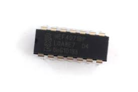
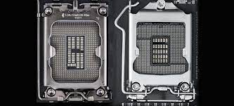
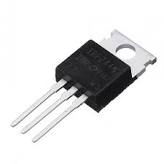
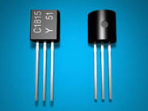
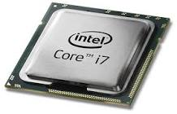
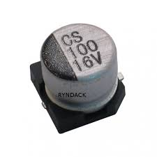
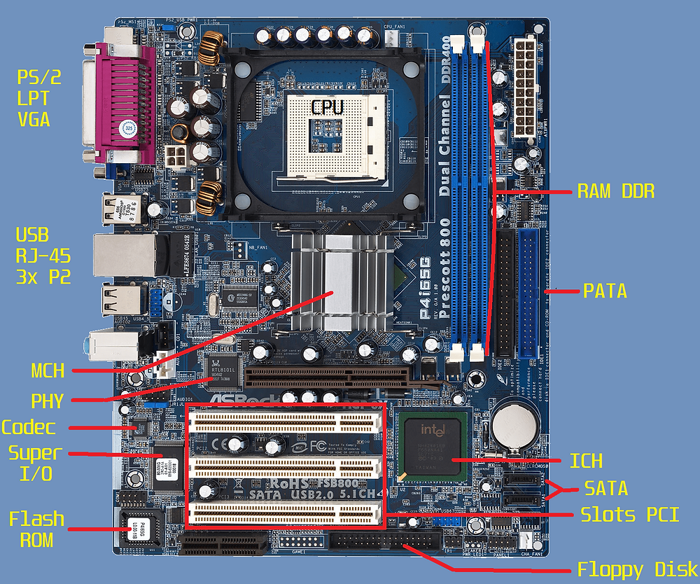

fale sobre o setup
Basicamente, o setup é um sistema operacional bem rudimentar, responsável por colocar o computador em funcionamento assim que você liga a máquina.
fale sobre o setup

CMOS é uma tecnologia de construção de circuitos integrados como processadores, memórias RAM, Flip-Flops e portas lógicas. É uma tecnologia baseada em oxidação em metal semicondutor. No caso dos circuitos citados, o semicondutor é o silício. Quando ficamos impressionados com a quantidade de transistores que conseguimos colocar atualmente nos processadores modernos, o grande responsável por isso é o CMOS. Inventado em 1963, essa tecnologia trouxe como diferencial o baixo custo de produção e baixo consumo elétrico.
3 BARAMENTOS
Barramentos (em inglês, bus) são padrões de comunicação utilizados em computadores para interconexão de dispositivos de variados tipos. Neste texto, você conhecerá características dos barramentos "clássicos" dos PCs, como ISA, AGP, PCI.
fale sobre a bios

A palavra BIOS é um acrônimo para Basic Input/Output System ou Sistema Básico de Entrada e Saída. Trata-se de um mecanismo responsável por algumas atividades consideradas corriqueiras em um computador, mas que são de suma importância para o correto funcionamento de uma máquina.
fale sobre o socket

é uma peça usada para conectar um item a uma rede maior de componentes. Os soquetes são geralmente feitos de plástico e possuem uma alavanca ou trinca para garantir a fixação do CPU. Antes de comprar um novo processador, o usuário deve verificar qual é o soquete existente em sua placa-mãe.
Na placa mãe temos alguns eletrônicos, sendo:

A palavra MOSFET é a sigla em inglês para “Metal Oxide Semiconductor Field Effect Transistor”. Isso significa que o MOSFET é um transistor de efeito de campo de semicondutor de óxido metálico. Resumindo, o MOSFET pertence a uma classe especial de transistores de efeito de campo em circuitos digitais ou analógicos.
<Transistores

Transistor é um dispositivo semicondutor, geralmente feito de silício ou germânio, usado para amplificar ou atenuar a intensidade da corrente elétrica em circuitos eletrônicos. Os transistores são como blocos fundamentais na construção de todos os dispositivos eletrônicos modernos, sendo usados em chips de computadores e smartphones
Quantos tem dentro de um processador?

os primeiros processadores da linha Intel Core 2 Duo possuem cerca de 291 milhões de transistores em um único chip.
Capacitores (eletrolítico, cerâmico, SMD, outros)

Desviar ruídos de alta frequência de volta para a fonte de alimentação. Os capacitores cerâmicos para SMD consistem de um bloco retangular de dielétrico de cerâmica no qual um certo número de eletrodos metálicos intercalados estão contidos
Placas mãe mais antigas possuem 2 Chipset (ponte norte e ponte sul).

toda placa-mãe possui dois chipset, ponte norte e ponte sul, estes são responsáveis por realizar todo controle dos diversos componente existentes e determinar certos padrões, como a frequência máxima da memória e do processador e o tipo de HD a ser utilizado,
Para a placa mãe funcionar é necessário o fornecimento de energia.

Pensando nisso, nós resolvemos desvendar um dos mistérios que atormentam muitas pessoas: para que servem todas aquelas entradas da placa-mãe, localizadas na parte traseira do computador?
Como um PC não é exatamente igual ao outro, falaremos sobre algumas entradas encontradas em máquinas mais novas, além de outras vistas em alguns computadores antigos que continuam funcionando como verdadeiros guerreiros por aí.